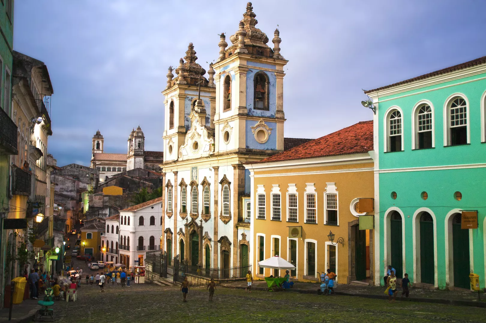

O Elevador Lacerda é um sistema de transporte público da cidade de Salvador, capital do estado brasileiro da Bahia.
Trata-se do primeiro elevador urbano do mundo. Em 8 de dezembro de 1873, quando a primeira torre foi inaugurada,
era o elevador mais alto do mundo, com 63 metros. A estrutura atual, de 1930, tem 72 metros de altura. Faz o transporte
de pessoas entre a Praça Cairu, na Cidade Baixa, e a Praça Tomé de Sousa, na Cidade Alta. É um dos principais pontos turísticos
e cartão-postal da cidade. Do alto de suas torres, descortina-se a vista para a Baía de Todos-os-Santos, o Mercado Modelo e,
ao fundo, o Forte de São Marcelo.
Leia Mais

As ruas de paralelepípedo contam com bares de caipirinha ao ar livre, lojas de souvenirs afro-baianos e praças cheias de músicos
e dançarinos no histórico Pelourinho. Os pontos turísticos coloniais incluem a Igreja e Convento de São Francisco e a Catedral
Basílica de Salvador, com azulejos portugueses e esculturas intrincadas banhadas a ouro. O Pelourinho, popularmente chamado de Pelô,
é um bairro da cidade de Salvador, no Brasil. Localiza-se no Centro Histórico da cidade, na área que abrange apenas as ruas que vão
do Terreiro de Jesus até o Largo do Pelourinho, o qual possui um conjunto arquitetônico colonial barroco brasileiro preservado
e integrante do Patrimônio Histórico da Organização das Nações Unidas para a Educação, a Ciência e a Cultura.
Leia Mais

O Farol da Barra, ou Farol de Santo Antônio, localiza-se na antiga ponta do Padrão, atual Ponta de Santo Antônio, em Salvador, no litoral
do estado da Bahia, no Brasil. Foi o segundo sistema de sinalização náutica a entrar em operação no Brasil, após o farol do antigo Palácio
de Friburgo no Recife. A torre atual, de 1839, é troncônica em alvenaria com lanterna e galeria, tem 22 metros de altura e foi pintada com
bandas pretas e brancas. O farol está construído no interior do Forte de Santo Antônio da Barra.
Leia Mais

A Igreja Nosso Senhor do Bonfim é um templo católico localizado na Sagrada Colina, na península de Itapagipe, em Salvador, Brasil.
Sua construção teve início entre 1745 e 1746, finalizando suas obras internas em 1754 e externa em 1772 (com as torres). É lá que são
distribuídas as famosas fitinhas do Bonfim, que são feitas desde o início do século XIX com a medida do comprimento do braço direito
até o peito da imagem do Senhor do Bonfim. É tombado desde 1985 e seu tombamento inclui também todo o seu acervo.
Leia Mais

